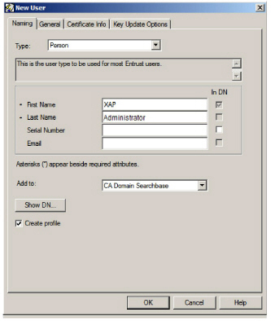
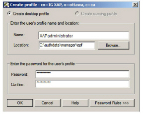
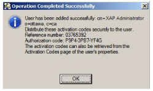

|
IdentityGuard Server 11.0 Administration Guide |
|
IdentityGuard Server 11.0 Administration Guide |
XAP credentials, in the form of an EPF file, are required by Entrust IdentityGuard. The EPF allows Entrust IdentityGuard to access the Security Manager CA in order to create user accounts. It is not used by human administrators.
There are two ways to create the EPF:
● using the Security Manager Administration GUI (see below for instructions)
or
● using the Entrust IdentityGuard command line (see To create the XAP EPF using the command line)
To create the XAP EPF using Security Manager Administration
a. Log in to Security Manager Administration. For details, see the Entrust Authority Security Manager Administration User Guide.
b. From the menu bar, click Users > New User.
c. Fill out the New User dialog box:
– In the First Name field, enter XAP.
– In the Last Name field, enter Administrator.
– Select Create profile. (This indicates to create the Entrust Security Store.)

– Click the General tab.
– From the User role drop-down list, select XAP Administrator, or whatever role you created in Step 8: Create XAP credentials.
– Click the Certificate Info tab.
– Select Admin Services User Management from the Type list.
– Click OK.
– Provide your password to authorize the user creation.
2. The Create profile dialog box appears. Fill it out, as shown in the following image. Click OK.

You have now created an XAP administrator user, and a corresponding EPF.
3. Copy XAPadministrator.epf from C:\authdata\manager\epf to the Entrust IdentityGuard server.
To create the XAP EPF using the command line
1. Create the XAP user, as described in Step 1 of To create the XAP EPF using Security Manager Administration .
Note: When creating this user, DO NOT click the Create profile link.
2. When this page appears record the reference number and authorization code.

3. Click OK.
4. On Entrust IdentityGuard, log in to the Master user shell. See Using the Master user shell.
5. At the Master<n> > prompt, enter a command using this syntax:
ca entrust epf –refnum <refnum> -authcode <authcode> -epf <filename> -password <epf_pass> -host <CA_host> [-pkixCmpPort <pkix_port>]-dirHost <dir_host> [-dirLdapPort <ldap_port>]
Or, if you have already created a Managed CA in Entrust IdentityGuard, use this syntax:
ca entrust epf –refnum <refnum> -authcode <authcode> -epf <filename> -password <epf_pass> -ca <Managed_CA>
● <refnum> is the reference number you recorded earlier.
● <authcode> is the authorization code you recorded earlier.
● <filename> is the path and filename of the EPF that will be created. In this guide, c:/XAPadministrator.epf is used.
Attention: Use / in paths. Do not use quotes or \.
● <epf_pass> is a password that you want to define for the EPF
● <Managed_CA> is the friendly name of the CA, as it appears in the Entrust IdentityGuard Administration interface, under Certificates > List Managed CAs > Managed CA Name. Use double-quotes if there are spaces in the name. You may not have created a managed CA yet, in which case you cannot use this option.
● <CA_host> is the host name or IP address of the Security Manager server. This host name is listed in Security Manager’s entrust.ini file under Authority=.
● <pkix_port> is the PKIX-CMP port of Security Manager. If you are using the default port of 829, there is no need to specify –pkixCmpPort parameter. This port is listed in Security Manager’s entrust.ini file under Authority=.
● <dir_host> is the host name or IP of Security Manager’s LDAP directory server. This host name is listed in Security Manager’s entrust.ini file, under Server=.
● <ldap_port> is the LDAP port for the directory. If you are using the default LDAP port, 389, there is no need to specify the –dirLdapPort parameter. This port is listed in Security Manager’s entrust.ini file, under Server=.
Examples:
ca entrust epf –refnum 03765392 –authcode P9P4-3PB7-YF4G –epf c:/XAPadministrator.epf –password Pazzw0rd@ -host 10.4.168.38 –dirHost 10.4.168.38
or
ca entrust epf –refnum 03765392 –authcode P9P4-3PB7-YF4G –epf c:/XAPadministrator.epf –password Pazzw0rd@ -ca “My CA”
6. Wait while the EPF is created. When the Master > prompt appears again, it means that the EPF creation succeeded.